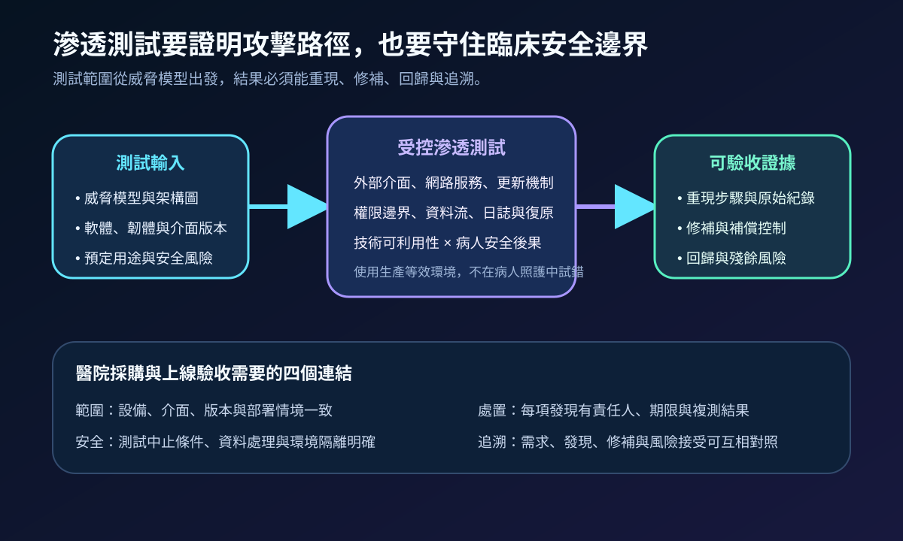
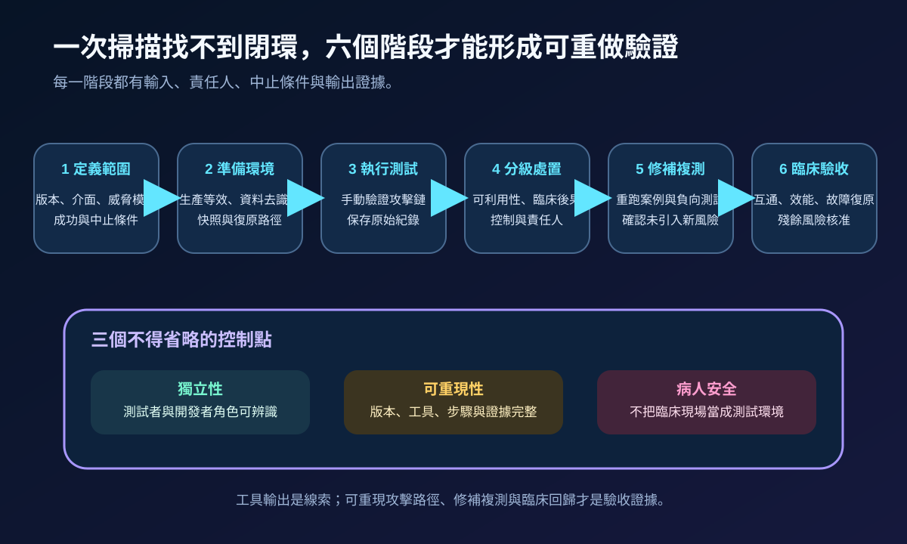
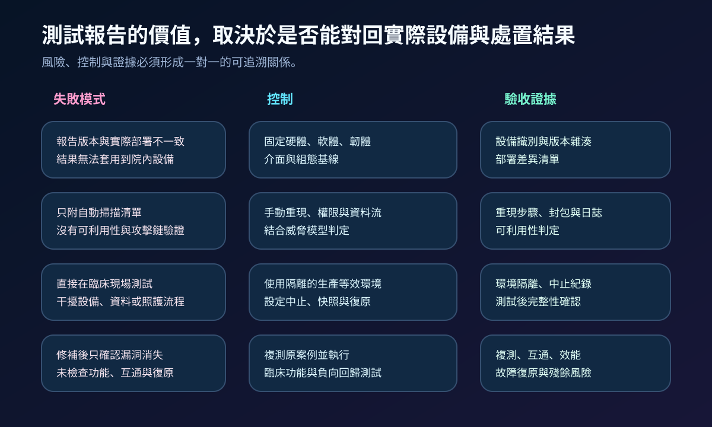

醫療資安國際觀察 · 2026-09-24
醫療設備滲透測試如何產生可重現證據：從威脅模型到臨床回歸
作者：Dr. William｜醫療資訊與資安治理實務工作者
醫療設備滲透測試的目標不是累積漏洞數量，而是以生產等效版本重現可能的攻擊路徑，確認病人安全邊界、修補效果與臨床功能未被破壞。
名詞解釋：掃描、滲透測試與回歸驗證不同
弱點掃描以工具辨識已知弱點與組態問題；滲透測試由測試者在授權範圍內驗證攻擊路徑、權限提升、資料存取及控制繞過；威脅模型描述資產、信任邊界、攻擊者能力與危害情境；回歸驗證則確認修補後原問題已關閉，且設備功能、互通、效能與故障復原仍符合需求。
國際現況與適用邊界
美國 FDA 於 2026 年 2 月更新醫療器材上市前資安指引，要求申請資料說明威脅模型、資安風險評估與測試結果；指引明列滲透測試應使用適合設備及風險的測試者，並建議說明測試人員的獨立性與專業背景、測試範圍、方法、結果及修補處置。這是美國醫療器材上市審查框架，不是台灣醫療機構的直接法定義務。
Medical Device Innovation Consortium 於 2026 年 6 月發布醫療設備滲透測試最佳實務白皮書，將測試定位為可重複、可追溯的協作流程，涵蓋測試規則、環境、方法、風險、報告與後續處置。NIST SP 800-115 則提供一般技術安全測試的規劃、執行、發現分析與緩解框架。MDIC 與 NIST 資料可支援方法設計，但不會自動轉化為台灣法規要求。
對台灣醫療機構的意義：可把國際資料轉成採購、驗收與變更控制條件，要求測試對準實際版本與部署情境；法規適用、醫療器材管理、病人資料與臨床風險仍須依台灣主管機關要求、契約及院內程序判定。
規劃：先定義設備基線與病人安全邊界
範圍至少包含硬體、軟體、韌體、網路服務、無線介面、更新與維護通道、雲端依賴及管理工具。製造商提供架構、威脅模型、測試帳號、復原方式與已知限制；醫院確認實際部署、網路分區、臨床流程與資料條件；測試團隊訂定允許及禁止動作、中止條件與證據保存方式。驗收指標可包含範圍覆蓋率、發現重現率、高風險項目關閉率、複測通過率、臨床回歸通過率及逾期殘餘風險數。

實作：建立可重做的測試與修補閉環
- 固定基線：記錄設備識別、硬體、軟韌體、組態、介面與相依服務，保存版本證據。
- 建立環境：使用隔離的生產等效環境、去識別資料、快照與可驗證復原路徑。
- 設計案例：由威脅模型推導外部介面、身分、更新、資料流、日誌、故障與復原測試。
- 驗證攻擊鏈：結合自動工具與手動測試，保存時間、步驟、封包、日誌、權限與影響。
- 分級處置：同時評估可利用性、病人安全、資料影響、暴露面與補償控制，指定責任人與期限。
- 修補複測：重跑原案例及負向測試，再驗證功能、互通、效能、警報、備份與故障復原。
風險：版本錯配、臨床誤測與只修漏洞不驗功能
常見失敗包括報告版本與院內設備不同、只附自動掃描輸出、直接在臨床現場進行破壞性測試，以及修補後未做功能回歸。控制重點是建立部署差異清單、隔離環境與中止條件，並把每項發現連到修補、複測、臨床驗收與正式殘餘風險接受。

可執行清單
- 測試版本是否與採購、驗收或院內實際部署版本一致？
- 威脅模型是否涵蓋設備介面、更新通道、雲端依賴與維護工具？
- 是否使用隔離的生產等效環境，並定義中止、快照與復原程序？
- 高風險發現是否具備重現步驟、原始證據、責任人、期限與補償控制？
- 修補後是否重跑原案例，並驗證功能、互通、效能及故障復原？
- 無法立即關閉的風險是否記錄適用範圍、期限、監測與核准者？
來源
- U.S. FDA｜Cybersecurity in Medical Devices: Quality System Considerations and Content of Premarket Submissions（更新：2026-02-03；查閱：2026-09-24）
- U.S. FDA｜Premarket Cybersecurity Guidance PDF（發布：2026-02；查閱：2026-09-24）
- Medical Device Innovation Consortium｜Medical Device Penetration Testing Best Practices（發布：2026-06；查閱：2026-09-24）
- NIST｜SP 800-115 Technical Guide to Information Security Testing and Assessment（發布：2008-09；查閱：2026-09-24）
內容說明
本文依健康台灣深耕計畫相關治理內容整理，並參考 FDA、MDIC 與 NIST 公開資料，提出台灣醫療機構可採用的醫療設備測試範圍、病人安全邊界、修補複測及臨床驗收方法；不把美國上市審查或國際最佳實務視為台灣法定義務，也不取代主管機關公告、醫療器材要求、契約判讀、法律意見或個案風險評估。